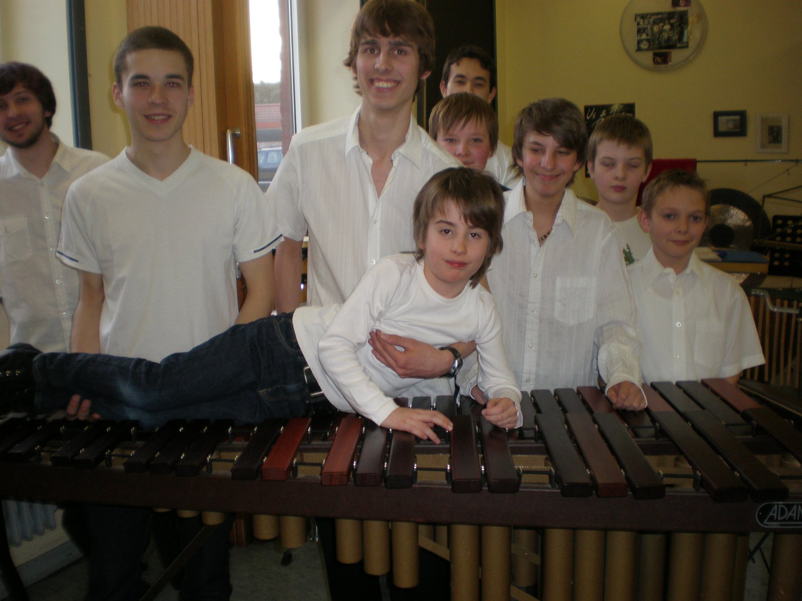
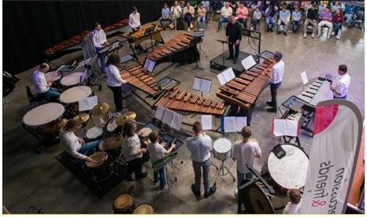
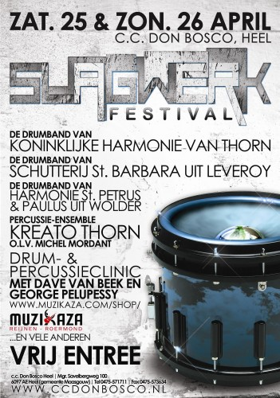
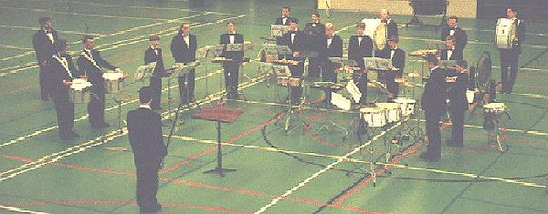

Conductor
Ensembles
From village drum bands to music-school percussion ensembles: for more than thirty-five years Michel Mordant has built and directed groups that perform at concerts and win contests in the Netherlands, Germany and Belgium.
Currently
Current ensembles

Percussion Ensemble Jugendmusikschule Eschweiler
Founded by Michel Mordant on 5 July 1996. Concerts, Jugend Musiziert prizes and collaborations across the border.
Ensemble history
Percussion Ensemble Jugendmusikschule Heinsberg
A young ensemble working on chamber repertoire such as Saul Goodman’s Scherzo.
Ensemble pageArchive
Previous ensembles
Each page documents the concerts, programmes and contest results of the years under Michel Mordant’s direction.
Da Capo Musikschule Gangelt
Percussion teaching from February 2019; a percussion ensemble founded in June 2024.
View
Fanfare St. Caecilia Broeksittard
Percussion ensemble and drum band, with a new piece dedicated: St. Caecilia on Parade.
View
Schutterij St. Salvius Limbricht
Drum, horn and bugle corps; winner of the year in the 1st division and a CD recording.
View
Music School Kreato, Thorn
Percussion ensemble performing at the Day of Percussion, festivals and with wind ensembles.
ViewFanfare Concordia, Einighausen
Percussion ensemble and youth drum band; winner of the 3rd and 2nd divisions in 2009.
ViewHarmonie St. Cecilia, Grevenbicht-Papenhoven
Drum band and percussion ensemble; predicate “very good” at the Maasgouw contest.
ViewSchutterij St. Stephanus, Dieteren
Winner of the 3rd division and overall contest winner in Susteren, 2008.
View
Drum and Bugle Corps St. Joseph, Vijlen
Michel’s own band — as a player from 1982 and as instructor from 1999, with many contest wins.
View
Drumband Trommelaere van Herle, Heerlen
Drum band in Heerlen, taught from June 1996.
View
Percussion Group St. Caecilia, Schinveld
From third level to Champion of the Netherlands in 1998.
ViewDrumband St. Brigida, Noorbeek
Seven contest wins and promotion from the 3rd to the 2nd level.
ViewDrumband St. Johannes St. Clemens, Merkelbeek
A complete record of contests, points and repertoire.
ViewHarmonie Wilhelmina Wolder, Maastricht
Percussion ensemble, taught from 27 August 2007. In 2010 the Kreato ensemble performed together with Harmonie Wilhelmina in Posterholt. Website
Harmonie St. Pieter, Maastricht
Percussion ensemble. In 2012 Michel gave a workshop at St. Pieter together with Myrthe and Sander.
DrumXperience, Schinveld
Percussion ensemble — background information (Word document).
Open documentTamboers St. Sebastiaan, Schimmert
Drum corps of the schutterij St. Sebastiaan in Schimmert.
Drum and Bugle Corps St. Martinus, Houthem
Drum and bugle corps in Houthem.
Drumband St. Catharina, Lemiers
Drum band in Lemiers.
As a player
Young Jazz Cats
Besides conducting, Michel Mordant is drummer of the Young Jazz Cats (Germany) — a New Orleans jazz band that also toured New Orleans.
Young Jazz Cats